Las 3 reglas de oro
¿Quién hace qué?
- Tomar número
- Cancelar un número propio
- Consultar oficios
- Registrar los oficios que llegan
- Marcar los oficios como atendidos
- Capturar actividades (pestaña Actividad)
- Capturar actividades (pestaña Actividad)
- Capturar un lote nuevo de números
- Corregir datos en la hoja
Una página, 3 pestañasTodo se hace aquí: no hay que saltar a otras páginas
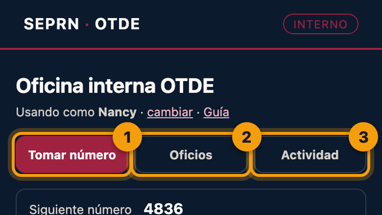
- 1Tomar número para cualquier documento que lleve número de oficio.
- 2Oficios: registrar los que llegan y ver cuáles faltan por atender.
- 3Actividad: lo que se hizo, para el reporte mensual de Planeación (la bitácora).Solo la ven Jorge y Nancy, que son quienes capturan el reporte.
Entrar la primera vezSolo una vez por celular o computadora
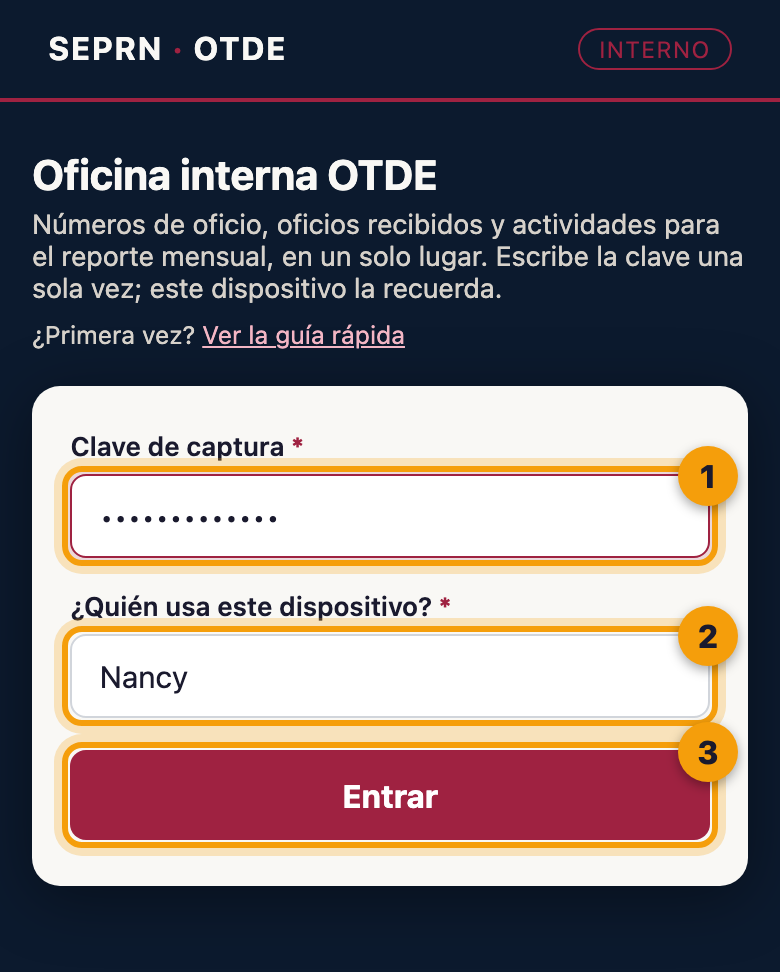
- 1Escribe la clave que te dio Jorge.Respeta mayúsculas y minúsculas.
- 2Elige tu nombre.Así el sistema sabe quién toma cada número.
- 3Toca Entrar.
Tomar un númeroAntes de imprimir cualquier documento que lleve número
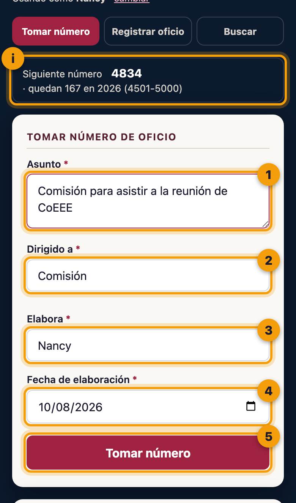
Pestaña «Tomar número»
- iAquí ves cuál número sigue y cuántos quedan en el lote del año.
- 1Asunto: de qué trata el documento, en pocas palabras.Ej. «Comisión para asistir a la reunión de CoEEE».
- 2Dirigido a: Comisión, Sectores, CoEEE, Comisión sindical u Otro.
- 3Elabora: ya viene tu nombre. Cámbialo solo si lo pides para alguien más.
- 4Fecha: ya viene la de hoy.
- 5Toca Tomar número.
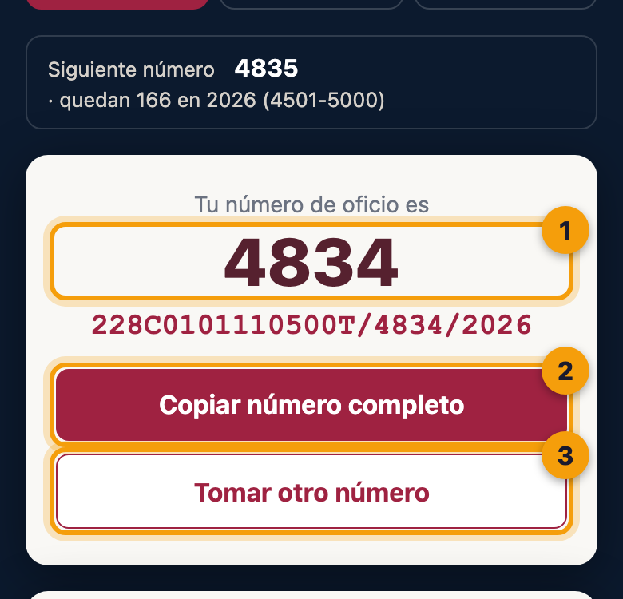
Tu número está listo
- 1Este es tu número. Ya es tuyo: nadie más lo puede recibir.
- 2Copiar número completo y pégalo en tu documento de Word.Copia el formato oficial: 228C0101110500T/4834/2026.
- 3Tomar otro número, si necesitas otro.
Cancelar un número que no se usóEl documento ya no salió, o se tomó dos veces
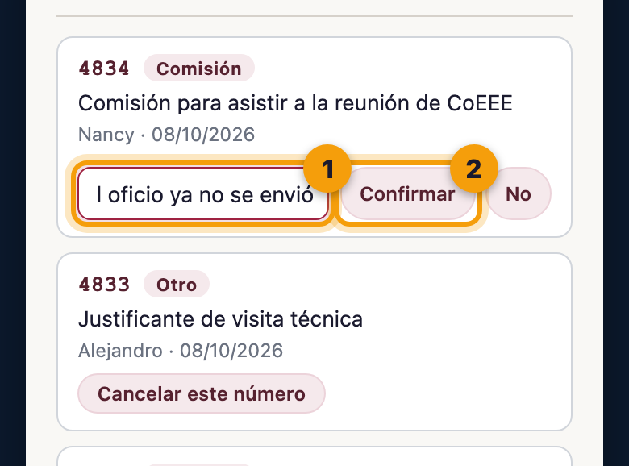
Abajo, en «Últimos números tomados»
- 1Toca Cancelar este número y escribe por qué no se usó.Ej. «El oficio ya no se envió».
- 2Toca Confirmar.
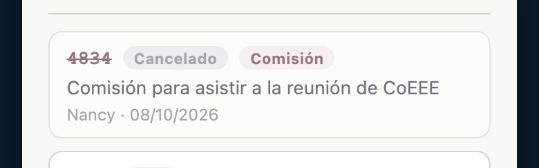
Registrar un oficio que llegaCuando Oficialía de Partes nos turna un oficio
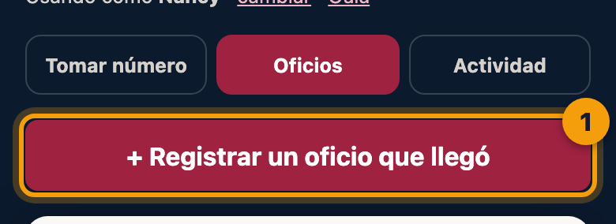
- 1En la pestaña Oficios, toca + Registrar un oficio que llegó.
Antes de llenar, ubica los dos números del oficio. No son el mismo y es la confusión más común:
- A El sello de Oficialía de Partes. Su folio (aquí, 3662) es el dato más importante: va en el campo 1. La fecha del sello va en el campo 2.
- B El número que trae el oficio, puesto por quien lo manda. Va en el campo 3 («No. de oficio del remitente»).
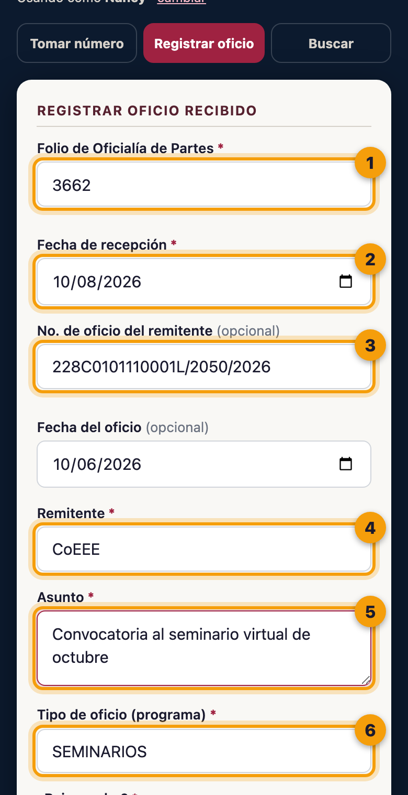
El formulario (parte 1)
- 1Folio de Oficialía de Partes, el del sello (A).
- 2Fecha de recepción, la del sello.
- 3No. de oficio del remitente (B). Si no trae, déjalo vacío.
- 4Remitente: quién lo manda.Al escribir, el sistema sugiere los que ya existen.
- 5Asunto, como viene en el oficio.
- 6Tipo de oficio: el programa (MIED, CUANTRIX, Seminarios…).
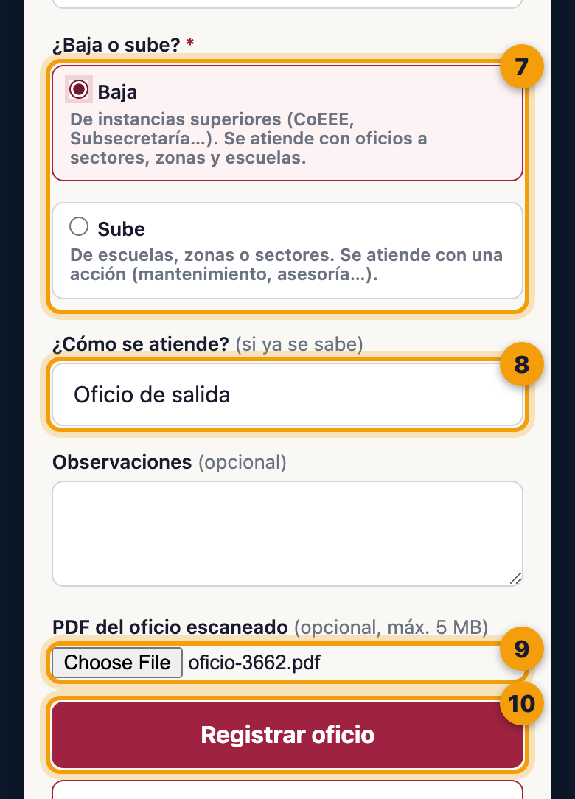
Parte 2
- 7¿Baja o sube? (ver abajo).
- 8¿Cómo se atiende? Si ya lo sabes: con un oficio de salida, con una acción o solo para conocimiento. Si no, déjalo así.
- 9PDF del oficio escaneado. Opcional, pero muy recomendable: así se puede consultar desde cualquier lugar.
- 10Toca Registrar oficio.
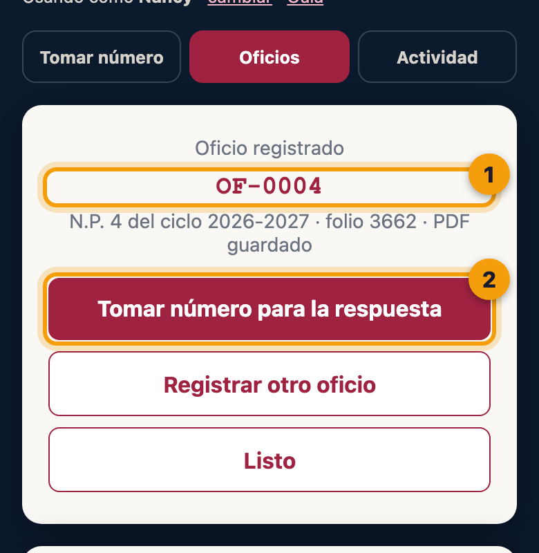
Oficio registrado
- 1El sistema le da una clave interna (OF-0004) y su N.P. del ciclo, como en el Excel.
- 2Si elegiste «Oficio de salida», aparece Tomar número para la respuesta. Ve al paso 6.
Responder un oficioCuando un oficio recibido se contesta con otro oficio
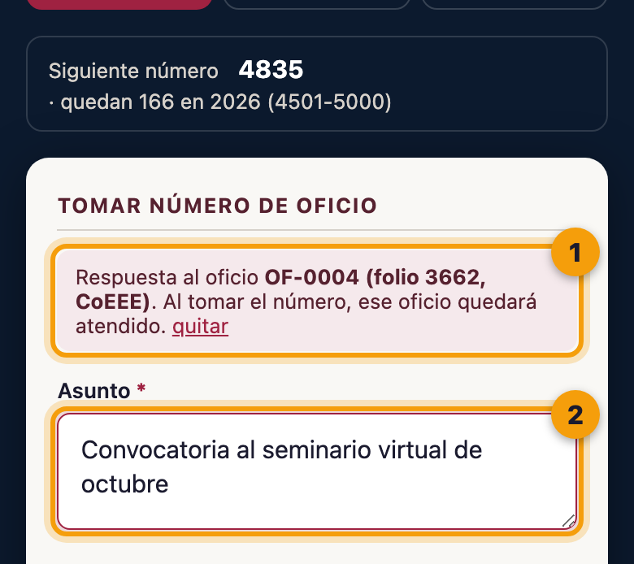
Llegas aquí de dos maneras: justo después de registrar el oficio, o desde la lista de Oficios con el botón Tomar número para responder.
- 1Este aviso confirma a qué oficio respondes.
- 2El asunto ya viene escrito. Ajústalo si hace falta, elige «Dirigido a» y toca Tomar número.
La lista de oficios«¿Qué falta por atender?», «¿Ya llegó el de Cuantrix?», «¿Con qué lo contestamos?»
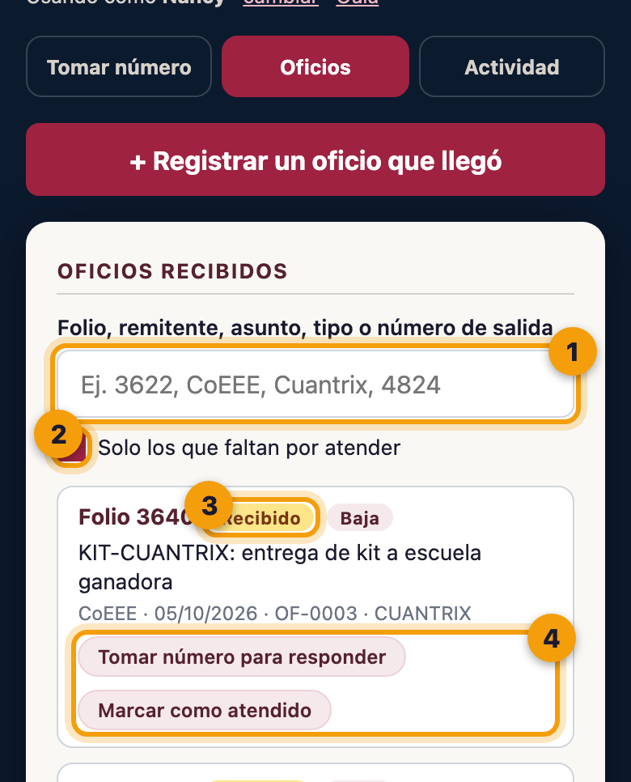
- 1Para buscar, escribe lo que recuerdes: folio, remitente, una palabra del asunto, el programa o el número con que se respondió.
- 2Al abrir, la lista muestra solo lo que falta por atender. Quita la marca para ver todos.
- 3El color te dice en qué va: Recibido falta atenderlo · Atendido terminado · Solo conocimiento no pedía nada
- 4Tomar número para responder (paso 6) o Marcar como atendido (paso 9). Si tiene PDF, también Ver PDF.
Oficios que llegan por la Oficina VirtualSolicitudes de Mantenimiento y Asesoría con su oficio en PDF
Estos oficios entran solos a la lista: nadie los registra. Como OTDE debe imprimir todo oficio digital y llevarlo a Oficialía de Partes, la lista te recuerda cuáles faltan.
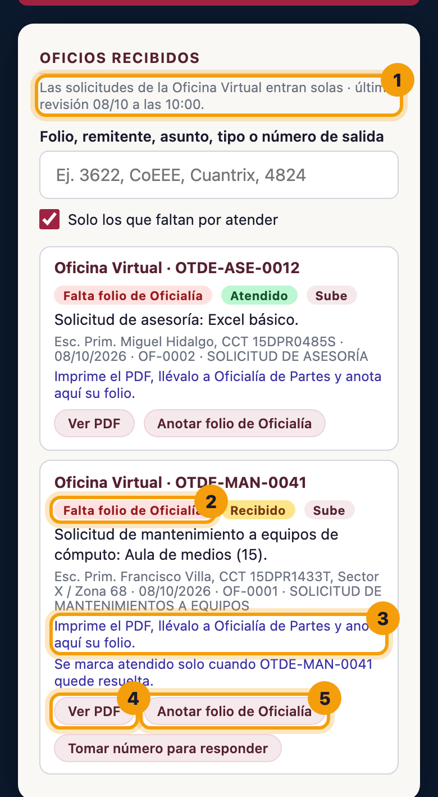
- 1Aquí ves cuándo revisó el sistema la Oficina Virtual por última vez (lo hace solo cada 30 minutos).
- 2Falta folio de Oficialía: todavía no se lleva a Oficialía de Partes.
- 3Lo que hay que hacer con él.
- 4Ver PDF para imprimirlo.
- 5Cuando Oficialía lo selle, Anotar folio de Oficialía y escribe el número del sello. Se guarda en este mismo registro.
Marcar un oficio como atendidoCuando ya se hizo lo que pedía el oficio
Es para los oficios que no se contestaron con otro oficio (esos ya quedan atendidos solos, paso 6). En la lista de Oficios, toca Marcar como atendido y elige cómo se atendió:
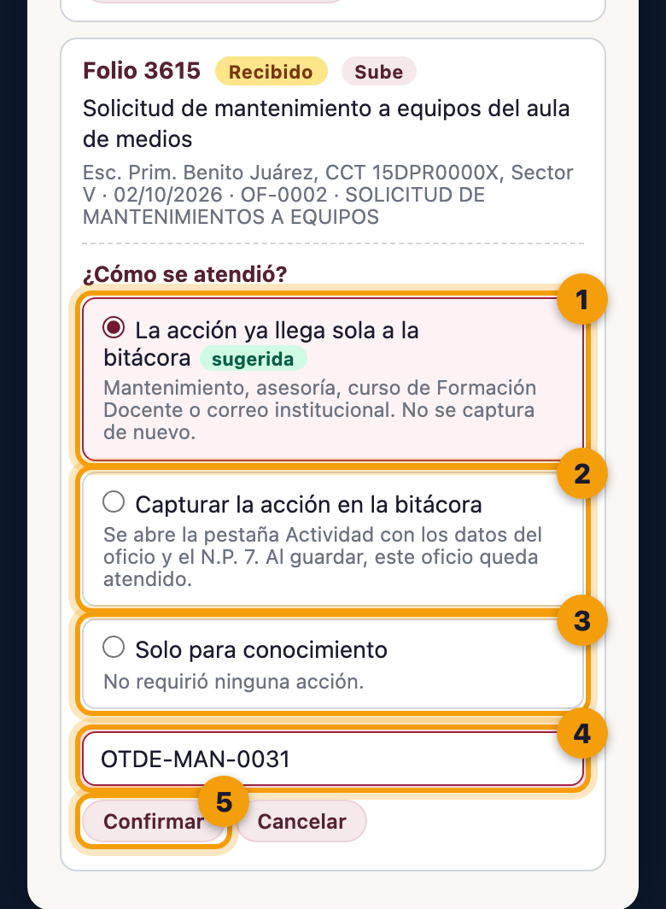
- 1La acción ya llega sola a la bitácora. Para mantenimiento, asesoría, un curso de Formación Docente o correo institucional: esos sistemas ya mandan su actividad a la bitácora.El sistema la marca como «sugerida» cuando el tipo de oficio es uno de esos.
- 2Capturar la acción en la bitácora. Para todo lo demás (MIED, CUANTRIX, UNETE, reuniones…). Abre la pestaña Actividad con los datos del oficio ya puestos.Solo aparece para Jorge y Nancy.
- 3Solo para conocimiento. El oficio no pedía hacer nada.
- 4En la opción 1, escribe el folio con que se atendió, si lo tienes (ej. OTDE-MAN-0031). Es opcional.
- 5Toca Confirmar (o Capturar la actividad en la opción 2).
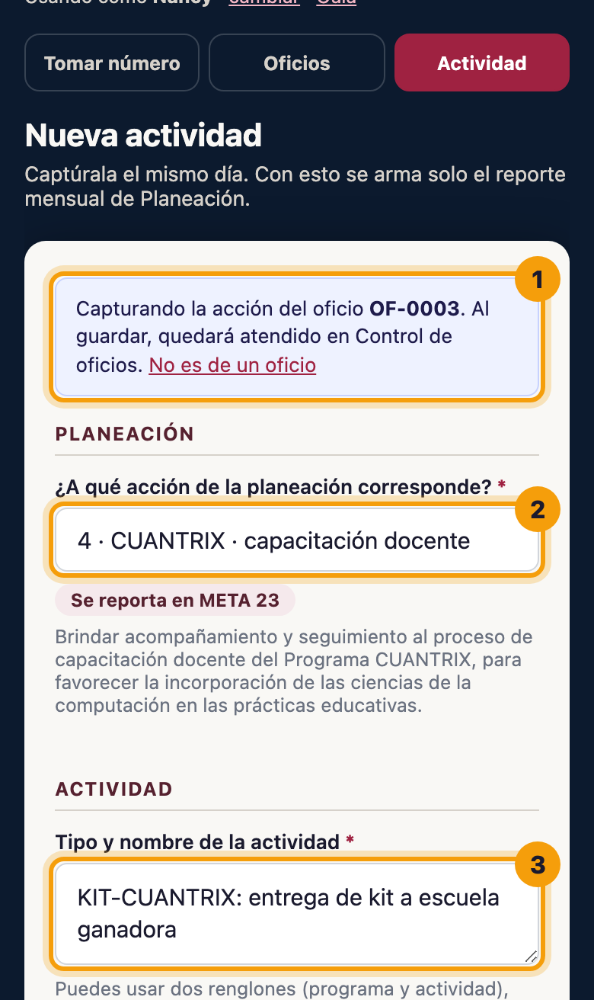
Si elegiste «Capturar la acción en la bitácora»
- 1Este aviso confirma de qué oficio es la actividad.
- 2La acción de la planeación ya viene elegida según el tipo de oficio. Cámbiala si no corresponde.
- 3El nombre viene del asunto del oficio: ajústalo a lo que se hizo (ej. «CUANTRIX» y abajo «Entrega de kit en ceremonia cívica»).
Completa lo que el oficio no sabe (fecha en que se hizo, lugar, descripción y beneficiarios) y toca Guardar actividad, como siempre.
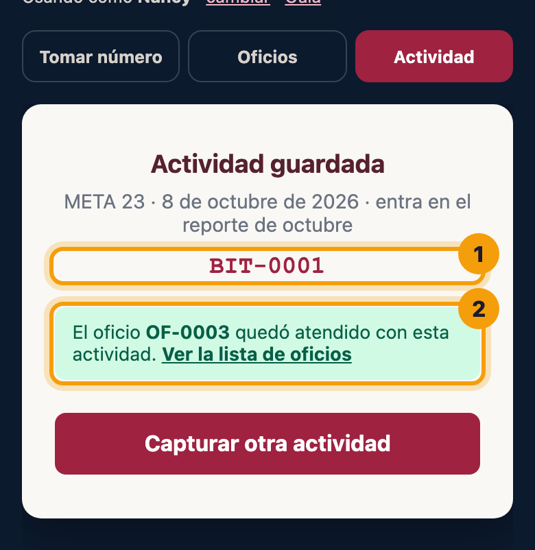
- 1El ID de la actividad en la bitácora.
- 2Confirmación de que el oficio quedó atendido con esa actividad. Ver la lista de oficios te regresa a la pestaña Oficios, ya actualizada.
Capturar una actividadJorge y Nancy · lo que se hizo, aunque no venga de un oficio
La pestaña Actividad es la bitácora de siempre, ahora dentro de esta página. Úsala para todo lo que se hizo y va al reporte mensual: una reunión, una visita o una capacitación, venga o no de un oficio.
- 1Toca la pestaña Actividad.
- 2Elige la acción de la planeación; el propósito y los beneficiarios se sugieren solos.
- 3Llena fecha, lugar, descripción y beneficiarios, y toca Guardar actividad.
¿Qué hago si…?
…dice «El servidor tardó demasiado en responder»
Vuelve a tocar el mismo botón, sin cambiar nada. No se duplica: si el primer intento sí llegó, te devuelve el mismo número o el mismo registro.
…dice que el folio ya está registrado
Ese oficio ya lo registró alguien. El sistema te lo muestra en la lista de abajo; no lo captures otra vez.
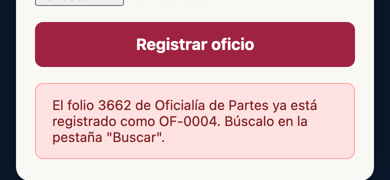
…dice que ya no quedan números
Se acabó el lote que la Subdirección asignó a OTDE. Avisa a Jorge: pide un lote nuevo y lo captura en la hoja. El sistema también le manda un correo cuando quedan 10.
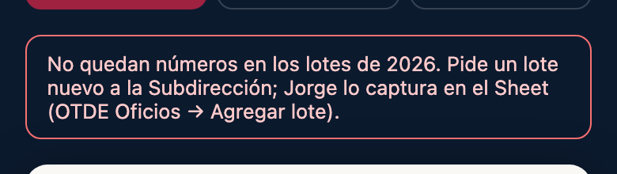
…la pestaña Actividad dice que no se pudo marcar el oficio como atendido
La actividad sí se guardó. En Oficios, busca el oficio → Marcar como atendido → «La acción ya llega sola a la bitácora» y escribe el BIT-ID que te dio. Así queda ligado sin capturar nada de nuevo.
…la pestaña Actividad me pide una clave
La bitácora tiene una clave distinta a la de esta página. Escríbela una vez ahí mismo y el dispositivo la recuerda. (Jorge puede poner la misma clave en los dos sistemas para que nunca pase.)
…me equivoqué en un dato de un oficio ya registrado
No lo registres otra vez. Dile a Jorge qué hay que corregir; él lo cambia directo en la hoja.
…tomé un número por error
Cancélalo con su motivo (paso 4). No intentes «reusarlo» para otro documento.
…me pide la clave otra vez o dice «clave incorrecta»
La clave cambió o se borró del navegador. Pídesela a Jorge y escríbela de nuevo. Si usas una computadora compartida, toca cambiar junto a tu nombre al terminar.
…alguien tomó un número de la lista de papel
Avisa a Jorge en ese momento para que lo registre. Si no se registra, el sistema podría entregar ese mismo número a otra persona.
Retos de prácticaPara la primera semana. Márcalos conforme los hagas.
Se aprende usándolo con trabajo real. No tomes números «de prueba»: cada uno gasta un número del lote. Practica con tu siguiente documento de verdad.